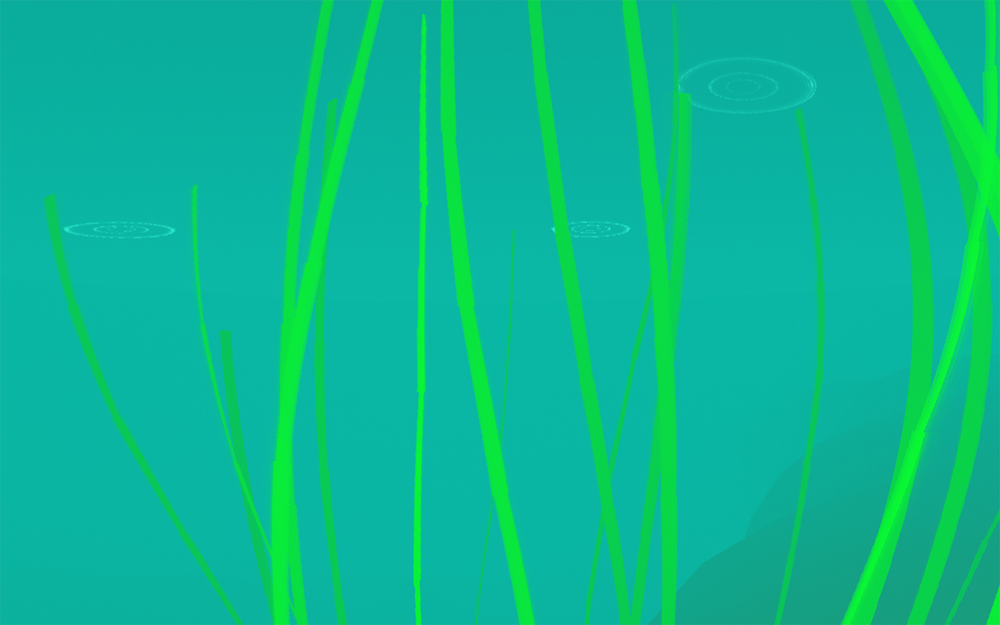
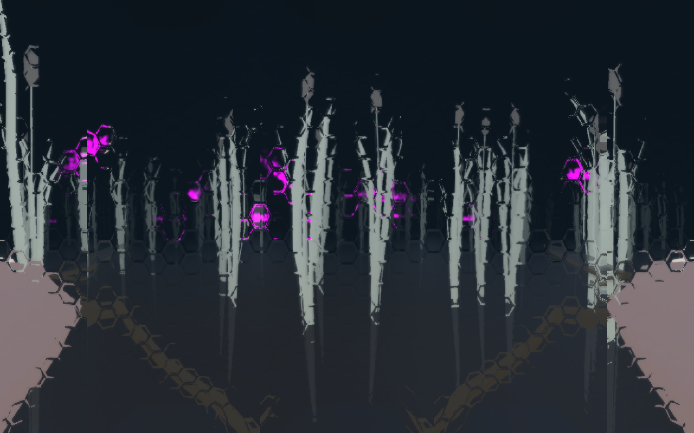
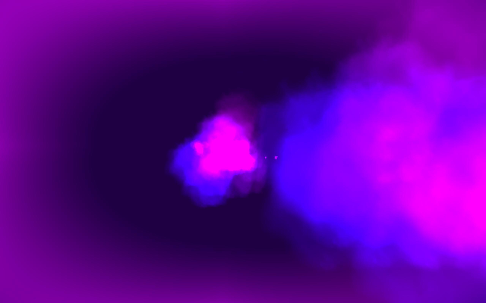

Every Creeping Thing
You can play Every Creeping Thing here.
Every Creeping Thing is a game about embodying different animal species. Challenging you to try to imagine the world from a perspective far removed from your own, it is a 3D game in three parts, each representing a unique creature's viewpoint. Making use of strange visual effects and unconventional control schemes, the player is tasked with making sense of their environment and how to navigate through it. Rather than having strict gameplay objectives and obstacles, in Every Creeping Thing the challenge is simply to understand how to exist in this new, alien perspective.

Over the course of the game, the player will move from the perspective of a trout to that of a mayfly to that of a larva. It is a short, atmospheric experience that challenges the player to reconsider their relationship to the environment and the creatures they share it with.

Every Creeping Thing was my thesis project for my MFA at the NYU Game Center. After doing research into other depictions of non-human animals as avatars, and finding these representations tended to reinforce problematic conceptualizations of animals as dominated by humans, I decided to try to make a game that took a different approach.

You can read more about the making of Every Creeping thing on page 16 of A MAZE magazine's animals issue.